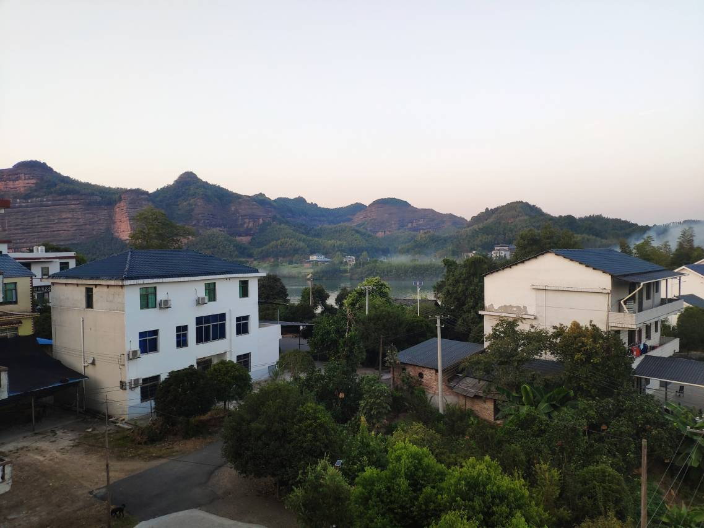
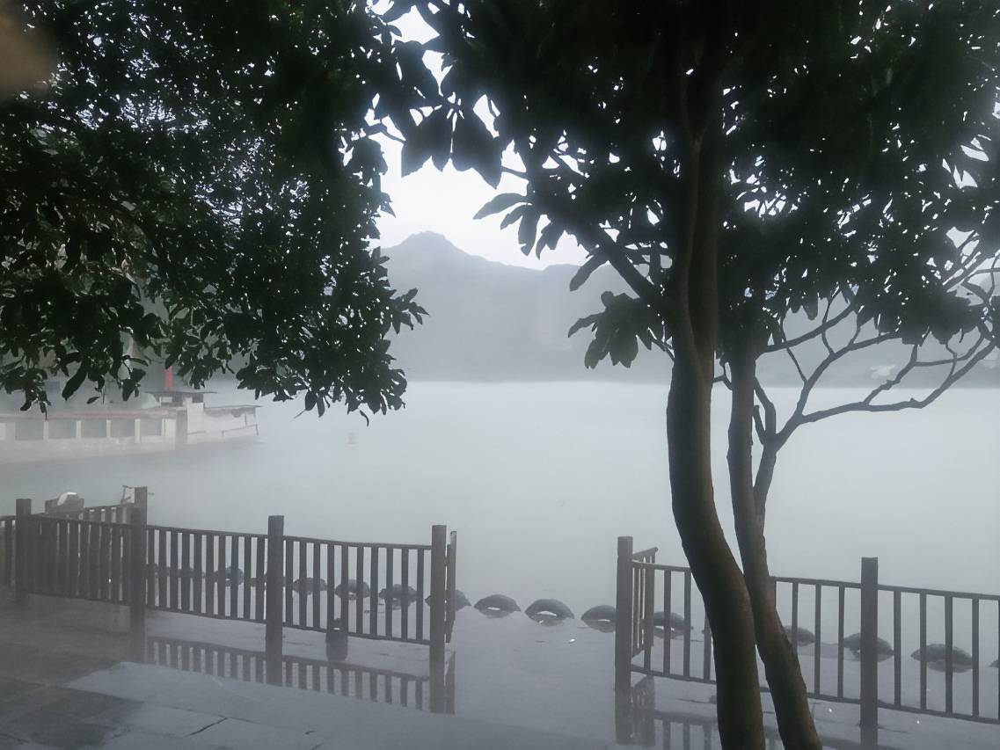
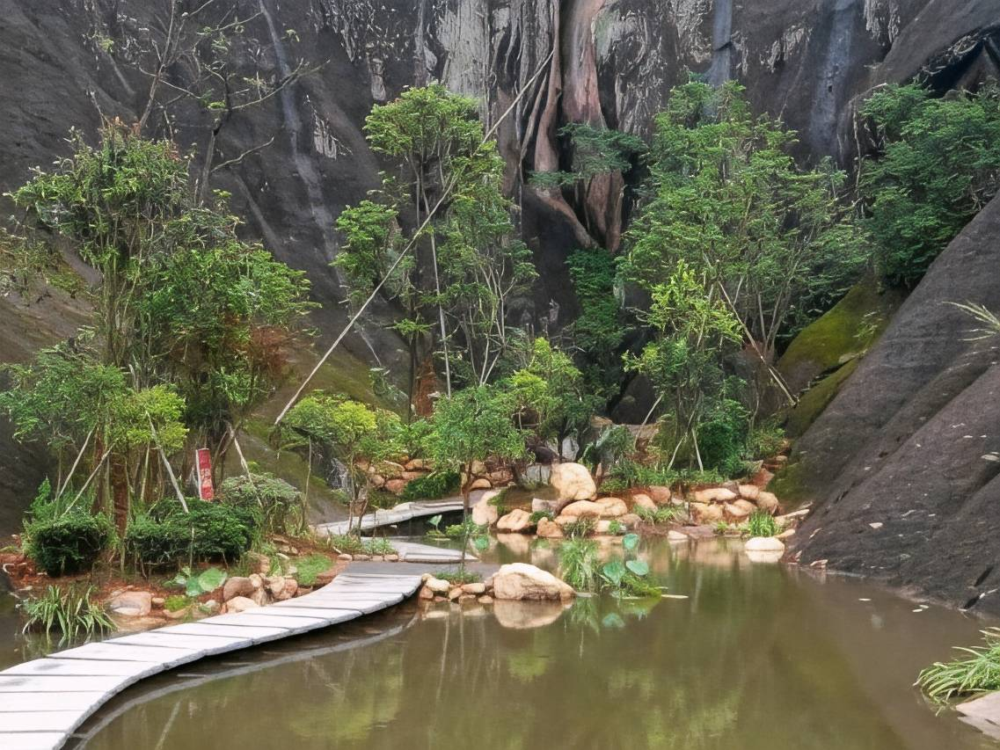
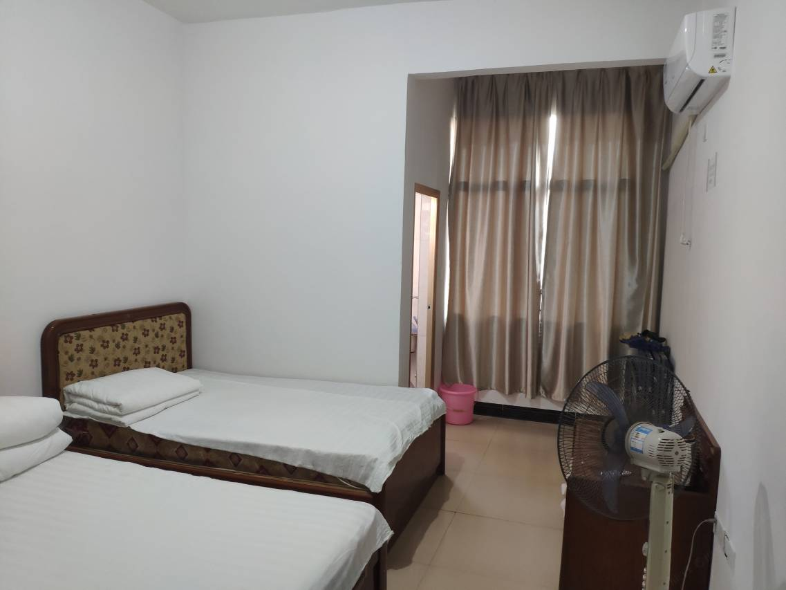
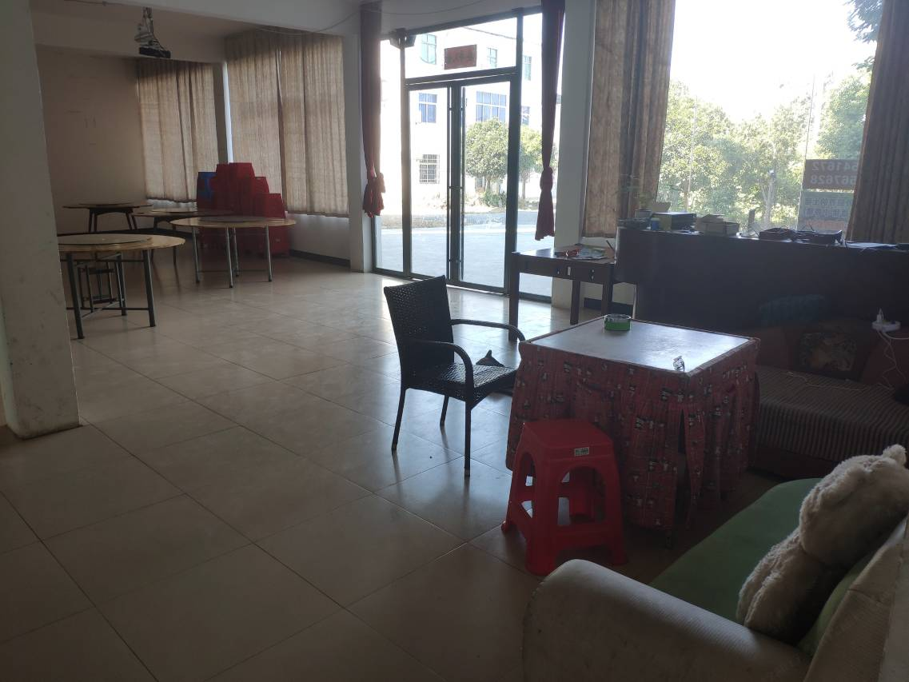
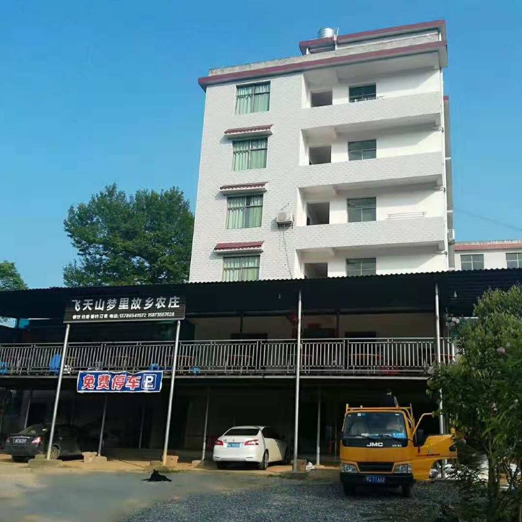

景区里的住处
农庄坐落在飞天山西大门老虎码头风景区，距飞天山景区约780米，适合游览之后安静休息。
农庄坐落在飞天山西大门老虎码头风景区，距飞天山景区约780米，适合游览之后安静休息。
提供单人间、双人间和三人间等住宿选择，并设有餐厅、茶室、棋牌室及烧烤等休闲空间。
适合飞天山游览、家庭出行、朋友小聚与周末短住。喜欢山水、乡野和慢节奏的人，都能在这里找到自在。
关于农庄
飞天山梦里故乡农庄依着飞天山的丹霞峰林与翠江风光而居。清晨推窗可见乡野，出门便能感受景区山水；游玩归来，可以在农庄吃一顿家常饭、喝茶聊天，安心住下。
这里不追求城市酒店的喧闹与华丽，更珍惜乡村生活原本的亲切：自然的风景、朴实的房间、热情的招呼，以及一家人围坐在一起的自在。
实景相册






体验项目
从农庄出发亲近飞天山自然风光，体验登山与山地骑行。
游玩归来喝茶歇脚，也可与亲友在棋牌室轻松相聚。
在景区游览之后坐下来用餐，感受简单亲切的乡村味道。
提供单人、双人及三人住宿选择，部分房型配有沙发。
联系我们